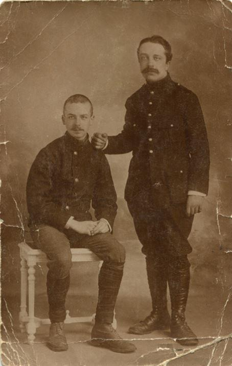
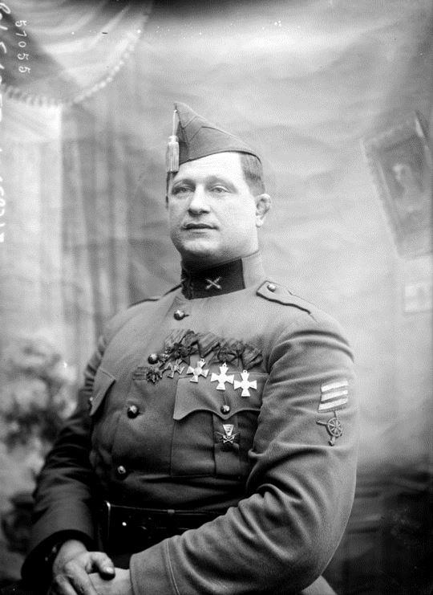
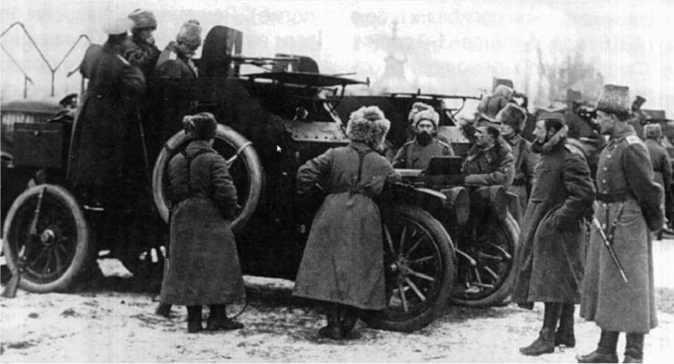
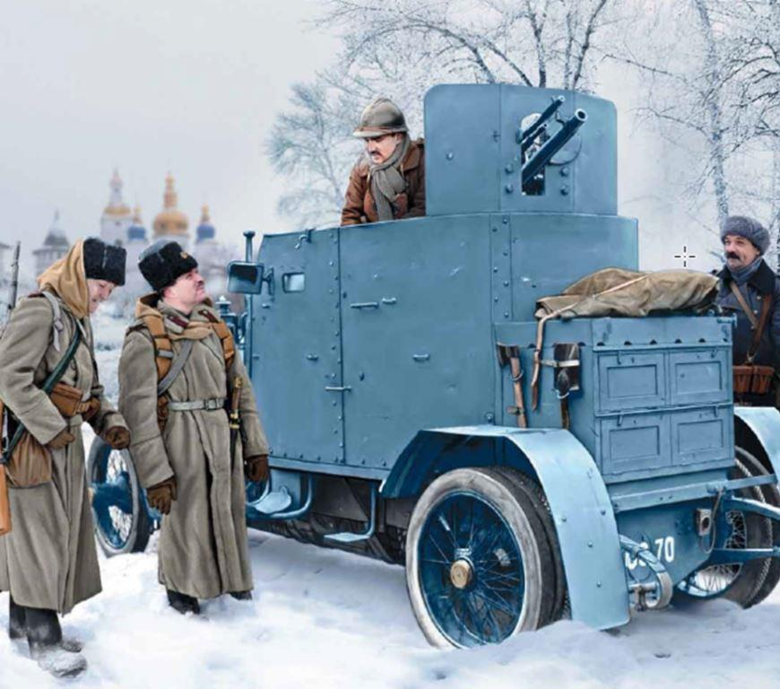
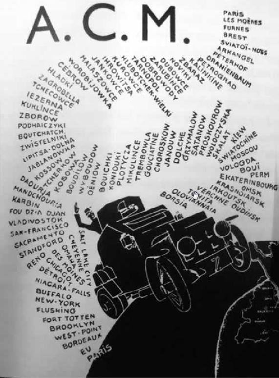

En 1914, l'Allemagne envahit la Belgique pour contourner les armées françaises en violation de la neutralité belge établie par le traité de 1831. L'état-major allemand croit que la traversée sera rapide, condition primordiale du succès de l'offensive contre la France. 40.000 soldats du Kaiser piétinent devant Liège, ville entourée de 12 forts. 60.000 hommes sont envoyés en renfort, ainsi que 10 % de l'artillerie allemande dont la célèbre Grosse Bertha1. L'armée belge se retire sur l'Yser, où elle fait front derrière les inondations de la plaine flamande, réalisée par l'ouverture des vannes des digues de la Mer du Nord. La Belgique reste occupée pendant toute la guerre, sauf derrière l'Yser. Le gouvernement est contraint de s'installer au Havre, en octobre 1914.
Attaché militaire belge à Paris, le Major Collin a collaboré à la réorganisation de l'armée belge. À l'automne 1914, lui vient l'idée de créer des corps de blindés capables de pénétrer en profondeur les lignes ennemies. Pourvu d'un châssis de l'Atelier Kellmann de Paris, d'un moteur Minerva2 d'une mitrailleuse légère et d'un canon Hotchkiss de 37 mm (ou une mitrailleuse lourde). L'équipage était composé de cinq personnes. Une dizaine de véhicules ont été fabriqué de façon artisanale. Les volontaires étaient principalement des aristocrates, des mécaniciens et des évadés de camps de prisonniers. Le manqué de discipline de ce corps hétéroclite était compensé par une forte détermination et un esprit de corps à toute épreuves.
 Les frères ThiryEn 1915, le bruit court que les volontaires partiront sur le front russe. Une querelle éclate alors entre les « Touristes » (volontaires à l'Est) et les « Cuisses frites » (soldats des tranchées qui se réchauffaient autour d'un brasero). Un referendum est alors organisé par les officiers et la grande majorité des soldats (environ 300) se portent volontaires pour la Russie. Parmi ces aventuriers, on trouve Constant-le-Marin3, quadruple champion du monde de lutte gréco-romaine, Julien Lahaut4, président du Parti communiste belge (qui fut assassiné en 1950), Marcel Thiry5, futur Secrétaire perpétuel de l'Académie royale de Langue et de littérature françaises de Belgique ou son frère Oscar6, directeur de la revue la Gazette belge de Paris.
Le 21 septembre, ils embarquent à bord du cargo britannique « Wray Castle » au port de Brest et naviguent via l'Océan arctique, afin d'échapper aux U-Boot.
Les conditions du voyage sont éprouvantes : tempêtes, grands froids, pénurie de nourriture. Le 12 octobre, alors que l'équipage était au bord de la mutinerie, le bateau accoste à Arkhangelsk.
Quelques jours plus tard, les volontaires sont reçus par S.M. le Tsar Nikolaï Aleksandrovitch Romanov. Même le chien Mitraille, mascotte du corps expéditionnaire a droit aux égards de la Cour et un repas spécial, qui a peut-être été préparé par Spiridon Ivanovitch Poutine, cuisinier de la Cour impériale et grand-père de l'actuel Président ! Un sergent hospitalisé reçoit la visite des Grandes Duchesses Olga et Tatiana Nikolaïevna, habillées pour l'occasion en infirmières.
Les premiers jours, les volontaires belges résistent mal au froid : le Major Collin avait commandé des uniformes à la styliste Jeanne Paquin, qui n'a pas tenu compte de la rigueur de l'hiver russe. Des uniformes adaptés au climat ont dès lors été rapidement fournis par l'armée impériale. Casernés à Peterhof, les Belges font souvent le mur pour aller « guindailler » (belgicisme signifiant "faire la fête") en ville, à une cadence telle qu'après un certain temps, des fiacres les attendaient pour les y conduire. Ils trinquaient à la future victoire, mais au kvas, l'alcool ayant été interdit dès le début de la guerre.
Début 1916, les volontaires sont envoyés en Galicie où se trouve la XIe armée Zbaraz. Alors que le Major Collin est rappelé au Havre, le Major Semet soutient l'assaut du général Brussilov. Lors de cette offensive, les véhicules belges sont embourbés. Dès que les conditions climatiques le permettent, ils effectuent de nombreuses missions de reconnaissance mais manquent d'effectifs pour faire des percées profondes, pour lesquelles il aurait fallu plusieurs divisions de blindés. Les affrontements coûtent cher en hommes et en matériel. Les châssis des automitrailleuses ne sont pas adaptés au poids du blindage et doivent manœuvrer prudemment.
Les blindés sont accompagnés de cyclistes, de motocyclistes et de cosaques. L'intendance est assurée et la motivation des troupes compense la piètre qualité du matériel. Ainsi, un mécanicien blessé au genou décide rester au front. Le capitaine Oudenne, seul face à l'ennemi, revient avec 8 prisonniers bosniaques ; un chef de peloton, mortellement blessé, ordonne à ses hommes de ne pas le secourir. Ils désobéissent et tombent sous les balles autrichiennes. Arrivés devant une rivière dont le pont s'est écroulé, les Belges, couverts par les Cosaques, s'improvisent charpentiers et construisent un ouvrage de fortune en rondins. Par la suite, il supportera le passage de l'artillerie.
« À leur demande, on photographie abondamment les Cosaques, les plus joyeux guerriers. Ceux du Don, ceux de l'Amour, fiers de porter les cheveux longs, les casquettes chahutées et la culotte bleue à large bande rouge ou blanche » (M. Thiry, p. 37)7.
La bataille de Zborov se déroule durant quinze jours en août. L'artillerie autrichienne pilonne les positions russes : « les obus ont fait des trous si rapprochés et si réguliers qu'on dirait un damier immense où les cases noires seraient représentées par les entonnoirs [...] des ombres lamentables se glissent de trou en trou, blessés désespérément accrochés à ce qui leur reste de vie douloureuse (M. Thiry, p. 42-43). L’assaut final des Austro-hongrois est stoppé par les automitrailleuses. Les Belges sont décorés par le général Gutov qui leur fait l'honneur de s'adresser à eux en français, langue qu'il maitrise à peine. "par habitude des toasts, levant une main sans nul verre pour porter joyeusement notre santé » (M. Thiry, p. 46).
Le 16 septembre, près de Svitelnik, un assaut russe répond à une offensive prussienne durant laquelle l'automitrailleuse de Constant-le-Marin est capturée. Fort de ses deux titres de champion du monde, téméraire, le lutteur jouit d'une grande popularité parmi les soldats russes. Ceux-ci avaient adopté son cri de guerre et chargeaient l'ennemi en hurlant en français : « on va leur couper la tête ! »
Le même mois, de nombreux soldats sont hospitalises à Kiev en raison d'une épidémie de gastro-entérite. Les soldats russes, qui partagent les dortoirs avec les Belges sont frappés par la bienveillance des officiers belges envers leurs subalternes. La révolte gronde contre la discipline de fer en rigueur dans l'armée impériale, dont les soldats n'ont droit, de la part des officiers « que de coups de cravaches ». Les mêmes officiers tsaristes ne peuvent donner des ordres aux Belges que lorsqu'ils sont en permission. Ce traitement de faveur est sans doute à attribuer au Général de Ryckel, représentant du Royaume de Belgique auprès du quartier général de Nicolas II et ami de la famille impériale.
Le 17 mars 1917, Nicolas II abdique en faveur du Grand-Duc Michel. Les troupes, démoralisées par la propagande pacifiste des Prussiens et des Austro-Hongrois continuent malgré tout le combat. Au sud de Zborov, les Russes et les Belges reçoivent le renfort d'ex-prisonniers de guerre tchèques. Parmi les Belges, on compte 2 morts, 10 blessés, dont Oscar Thiry, qui en gardera des séquelles à vie. À Koniuk, le blindé commandé par Constant-le-Marin n'échappe pas aux tirs de l'ennemi. On dénombre un tué et 4 blessés, dont le lutteur qui a reçu trois balles dans le corps. Il se réfugie dans un trou d'obus où il est secouru par ses camarades. Il ne faut pas moins de 5 soldats pour porter, sous le feu de l'ennemi, le colosse de 2 mètres et 130 kg.
Les Prussiens contre-attaquent à Sborov le 19 juillet. Les volontaires tchèques se sacrifient jusqu'au dernier. Désigné ambulancier, Marcel Thiry va conduire son frère Oscar, Constant-le-Marin et l'interprète franco-russe à Kiev. Le 21 juillet, jour de la fête nationale belge, le chemin est coupé par l'ennemi. Les Russes et les Belges traversent les lignes au prix de lourdes pertes.
Ayant reçu l'ordre de rester neutres durant la guerre civile, les Belges doivent rentrer en France. Confinés à Kiev, ils négocient avec le Commandant en chef Krileno, qui a fait ses études... à l'Université de Liège ! Les grands blessés sont acheminés via Petrograd, la Suède et la Grande Bretagne. Les troupes valides sont acheminées vers l'Est. Les Russes affrètent un train mais ne peuvent pas fournir l'intendance. Qu'à cela ne tienne : les Belges achètent des céréales, distillent de la vodka avec des alambics de fortune et échangent les bouteilles contre des vivres. Selon Marcel Thiry, la vodka belge était fort appréciée.
Les Soviets sont pressés de voir partir les Belges mais veulent conserver les automitrailleuses. Les Volontaires optent pour un jugement à la Salomon : les armes et véhicules sont abandonnés, mais hors d'usage. Le train de 50 wagons est alors affrété. Il comporte entre autres un wagon-cuisine, un wagon-boulangerie, un wagon-épicerie et... un wagon "voyage de noces" que les 7 couples unis sur place occupaient à tour de rôle. Dans « Lettres inédites d’Oscar et Marcel Thiry à leur famille pendant la Première Guerre mondiale » (Le Grand miroir, 2003), le futur auteur de littérature fantastique confie que son frère aussi a succombé au charme de sa marraine de guerre et a profité de permissions pour séjourner chez elle… mais il est rentré seul.
Le 20 février 1918, le train quitte Kiev pour Vologia, via Moscou. La ligne de Mourmansk étant coupée par les troupes allemandes, les Belges sont envoyés vers Vladivostok. La temperature frôlant les -50°C, des wagons entiers sont chargés de bois de chauffage alimentant des poêles de fortune bricolés par les soldats.
À partir de Omsk, de longs palabres sont nécessaires pour conserver la neutralité des Belges. Enfin arrivés à la frontière russo-chinoise, les Volontaires ont la surprise de voir arriver un train-couchettes flambant neuf fabriqué à... Charleroi ! Le voyage jusqu'à Vladivostok dure 3 semaines. Le 23 avril 1918, les troupes embarquent sur l'USS « Sheridan » à destination de San-Francisco, à l'exception de quelques-uns qui décident de rester en Russie. Quant au chien Mitraille, en raison des strictes lois américaines, il ne peut embarquer et est recueilli par les soldats russes. Le navire arrive à San-Francisco le 12 mai, les Belges embarquent à New York à bord du transatlantique « La Lorraine » vers Bordeaux le 13 juin. Arrivés en France le 24, ils montent à Paris pour la Fête nationale et sont ensuite disperses dans divers régiments.
« Nous y aurons un peu langui, beaucoup ri, aimé peut-être, combattu, peiner, risqué, vu tomber nos frères et les meilleurs d'entre eux. Au total, nous y avons vécu les trente mois de notre jeunesse les plus riches en souvenirs et nous garderons d'elle, du people russe un amour plus fort que l'amertume des revers et des déceptions. Elle sera à jamais la terre de nos trois grandes années » écrit Marcel Thiry (p. 114).
Il reste à jamais marqué par son aventure, qui influence son œuvre poétique et lui inspire trois romans :
« Le Goût du malheur », La Renaissance d'Occident,1922 (Jacques Lorand tombe amoureux, vers la fin de la guerre, d’Aline, une Française, née à Kiev).
« Passage à Kiev », ARLLFB,1990 (dans ce récit, il se présente comme un témoin des événements qu’il a vécu).
« Voie-lactée », André De Rache, 1961. (une histoire d’amour que vit le narrateur avec une jeune femme, à Kiev, en 1917, amour qui le poursuivra jusqu’à son dernier souffle).
À son propos, son confrère de l’Académie Thomas Owen écrit : « il débuta dans la vie par une grande aventure. Volontaire au Corps expéditionnaire belge des autocanons en Russie en 1916 [sic], il traversa avec son unité tout le continent asiatique, où il gagna New-York où l’attendait l’accueil triomphal réservé aux héros. Un voyage de ce genre exalte la personnalité et Marcel Thiry en garda une grande illumination, la hantise des lointains et un enrichissement profond de son imagination » (« Paris-Match, mars 1987).
J-L. E.
Notes et références :
1 Grosse Bertha : Canon Krupp d’un diamètre de 420 mm. Son utilisation contre le fort de Loncin (Liège) provoqua l’explosion des douze tonnes de la réserve de poudre, ce qui entraîna la reddition de la ville. La grosse Bertha fut également utilisée contre les positions russes.
2 Minerva : usine anversoise de production de vélos, motos et automobiles (1897-1958).
3 Henri Herd, dit Constant le Marin, (Liège 1884-)1965 était un lutteur professionnel qui fut quatre fois champion du monde. Son neveu, Lambert Grailet, était historien et… catcheur. Il a entre autres livré un combat contre Lino Ventura à Liège en 1950.
4 Julien Lahaut (Seraing 1884 -1950) est un homme politique communiste, syndicaliste belge et militant wallon. Quelques jours après avoir crié « vive la République » lors de la prestation de serment du Roi Baudouin 1er, il est assassiné par deux inconnus.
5 Marcel Thiry (Charleroi 1897, Vaux-sous-Chèvremont [région liégeoise 1977]. Romancier, nouvelliste, fantastiqueur, essayiste et poète, il fut élu à l’Académie belge de Littérature. Il fut également sénateur du Mouvement wallon et négociant en bois. Sa fille Lise fut une des meilleures virologues du XXe siècle. La ville de Liège a conservé ses archives et organise un prix littéraire annuel qui porte son nom.
6 Oscar Thiry (1888-1972) était un jeune auteur fort prometteur (e.a. « La Miraculeuse Aventure des Jeunes Belgiques » (La Belgique artistique et littéraire, 1911). Une grave blessure lors de la campagne de Russie mit prématurément fin à sa carrière.
7 Ces références renvoient à Thiry, Marcel, « Le tour du monde en guerre des autos-canons belges », André de Rasche, 1965 (rééd. augmentée de » correspondance et documents inédits : Le Grand Miroir, 2003).

Partager cette page